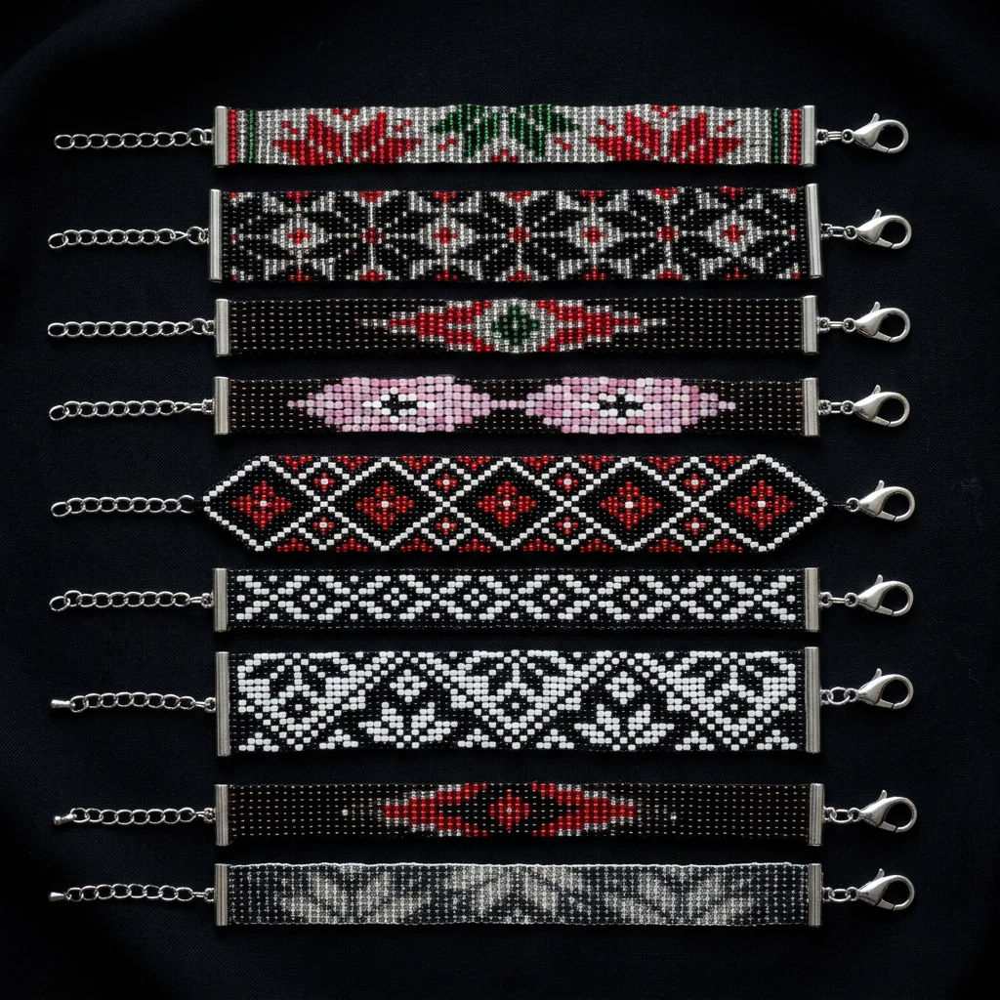
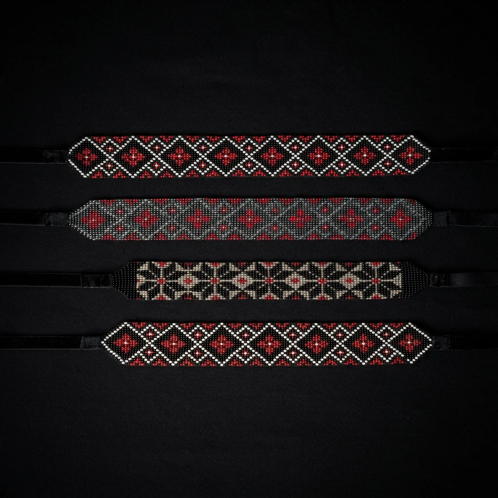
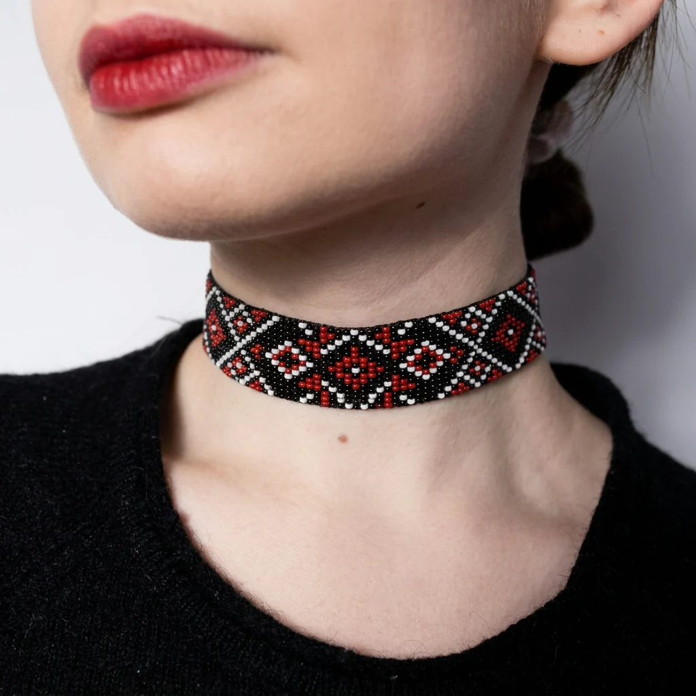
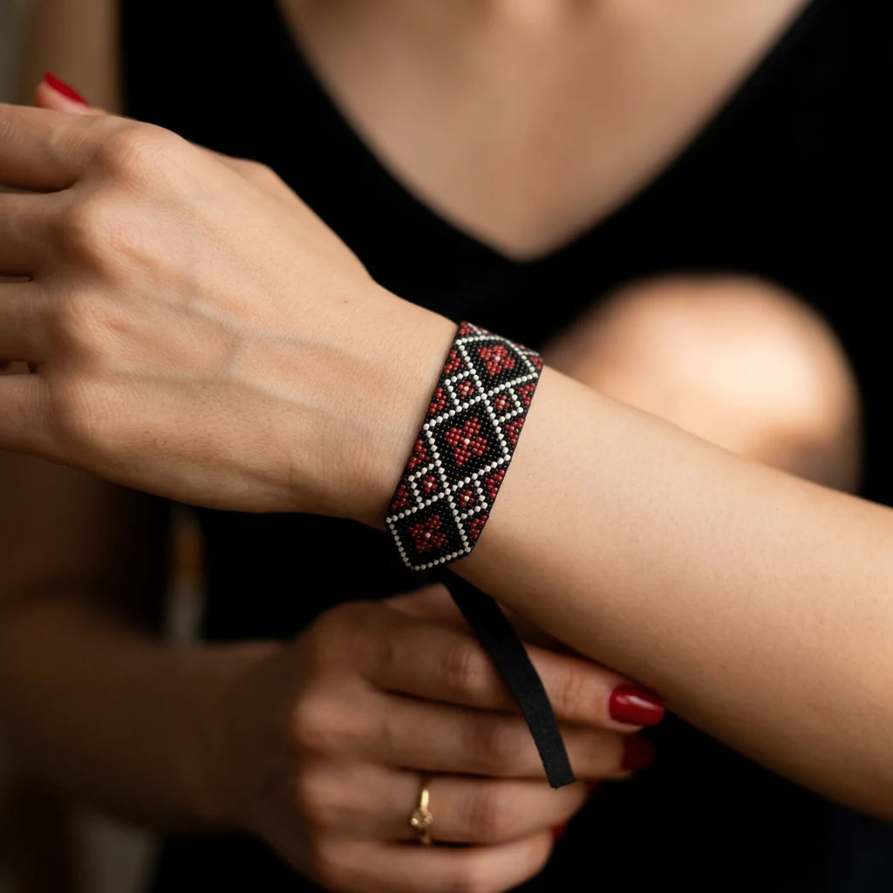

Kézművesség · Hagyomány
Gyöngyfűzés

Apró gyöngyök, végtelen türelem. Minden darab egy gondolattal kezdődik: egy színnel, mintával vagy érzéssel, amelyet szeretnék megőrizni. Gyöngyről gyöngyre, sorról sorra válik valósággá a kezemben.
Ez több mint díszítés: elmélyülés. Minden darab magában hordozza azt a figyelmet és csendet, amelyben megszületett.
Érdeklődöm egy darabrólVálogatás
További gyöngyfűzött munkák



